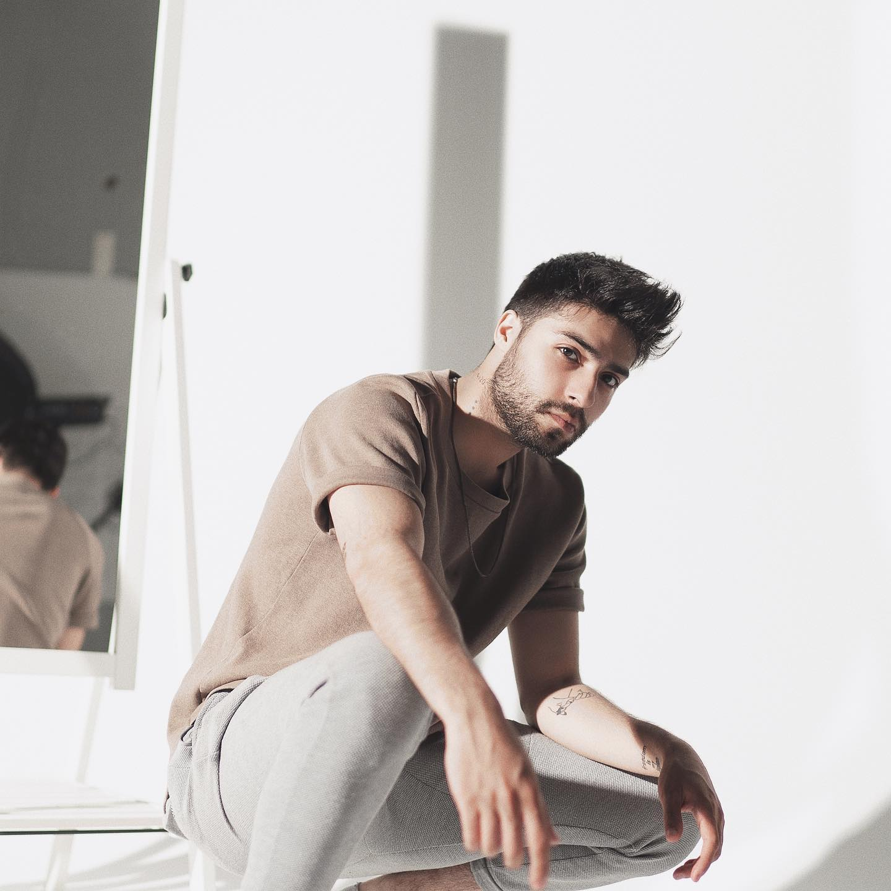
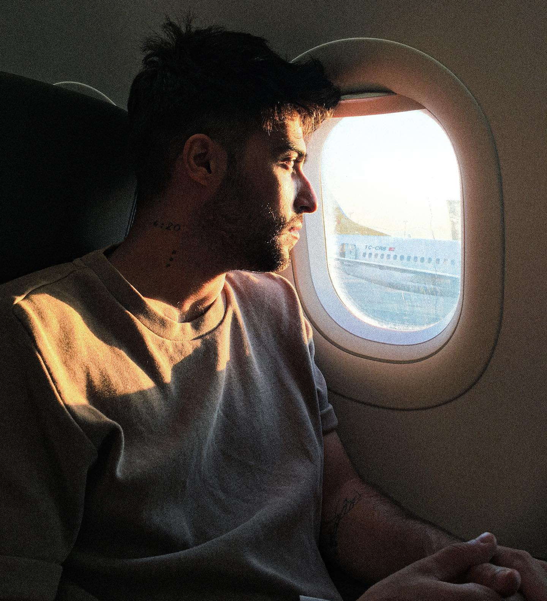
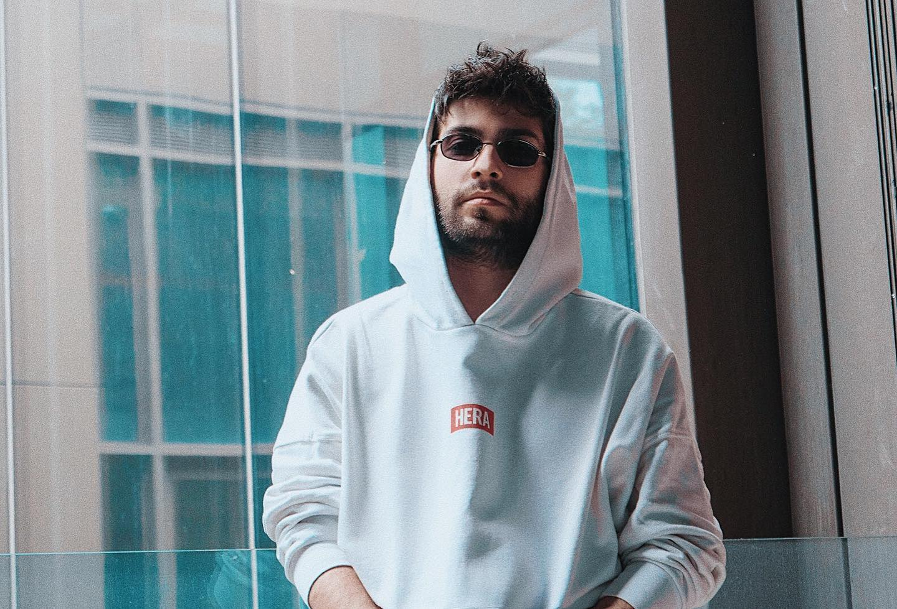
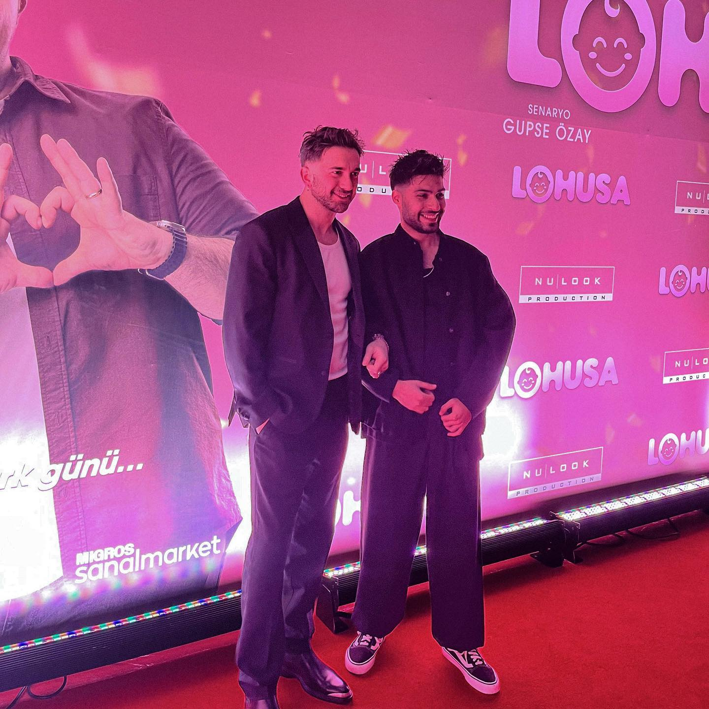
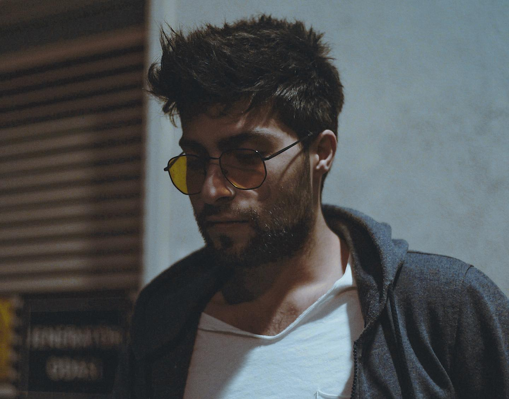

Hakkında
Rua Music, DJ setinde de stüdyoda da aynı rahatlıkta duran bir prodüktör. Murat Kışlacık için ritim önce bateride öğrenilen bir dildi, sonra bir DJ setinin ve bir prodüksiyonun omurgası oldu.
1994'te Samsun'da doğdu. Kariyerine Soner Sarıkabadayı'nın müzik şirketi PDND bünyesinde müzik koordinatörü olarak devam etti; bu süreçte birçok sanatçının prodüktörlüğünü üstlendi. Bugün DJ setleri, kendi besteleri ve solo çalışmalarıyla Rua Music kimliğini sürdürüyor — sahne performansını ve canlı enstrüman deneyimini stüdyo pratiğinden ayırmıyor.

Plak 03 · İniş öncesi, turne defterinden bir kare.
Sözüm Olsun
Rua Music'in yayınlanan ilk tekli çalışması. Apple Music'te dinleyebilirsin.
- Yıl
- 2023
- Tür
- Hip-Hop / Rap
- Format
- Single
- Platform
- Apple Music

Plak 04 · Sahne dışında da aynı karakter.
Kontak Föyü
Sahne dışı anlardan seçmeler.


Sahne Aldığı Mekanlar





DJ set, prodüksiyon ya da canlı performans için
Talebini kısaca anlat, dönüş yapayım.
Instagram'dan Yaz
Takipte Kal
Setlerin arkası, stüdyo anları ve yeni üretimler Instagram'da paylaşılıyor.
@muratkislacik